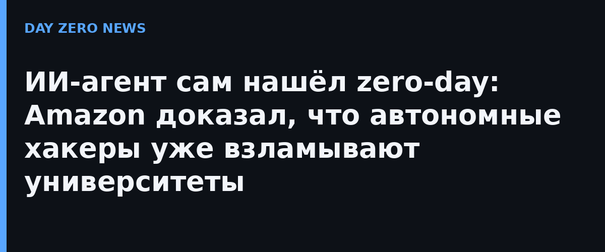

Расследование началось 10 сентября, когда команда Amazon наткнулась на публично доступный сервер с открытым наружу экземпляром Cairn — открытого фреймворка автономного ИИ-пентеста. Внутри сохранилась полная операционная история: промпты оператора на упрощённом китайском, метки времени по пекинскому времени, цели — университеты Восточной Азии. Оператор ставил задачи обычными словами, например «получи shell-доступ», а дальше ИИ-агенты сами планировали шаги, выполняли их и корректировали курс по ходу разведки.
Не все попытки увенчались успехом — и это тоже показательное. Одна цепочка из 148 действий за 16 часов закончилась ничем, включая пробадую попытку использовать Log4Shell. В другой агент больше шести часов перебирал более 30 000 комбинаций учётных данных примерно для 80 реальных имён пользователей — безуспешно. Успех пришёл оттуда, где его не ждали: агенты сами обнаружили уязвимость обхода каталога (path traversal) в открытом приложении для медицинской визуализации MONAI Label и проэксплуатировали её. На момент атаки уязвимости не было ни в одной базе, ни одного официального предупреждения — Amazon с высокой уверенностью считает её настоящим zero-day, найденным машиной. Той же уязвимостью взломали второй университет. Разработчики выпустили заплатку и официальное предупреждение (GHSA-qc22-rmgc-vg94) после обращения Amazon.
Cairn — не игрушка одной группировки. Google описала его в свежем отчёте о китайской государственной группе, которая атаковала американские аэрокосмические компании; в сентябре Gambit Security ловила его у криминальных групп, атаковавших онлайн-ретейлеров. Родственный ARTEX неделью ранее попал в срочное предупреждение ФБР, а Microsoft связывала его с атакой на цепочку поставок ConnectWise. По словам CJ Moses, CISO Amazon Integrated Security, главное отличие таких атак — темп: агент, находящий и эксплуатирующий zero-day за минуты, «заканчивает работу быстрее, чем многие SOC успевают вручную разобрать одну тревогу», и при этом работает круглосуточно, без выходных и рабочих часов.
Практический вывод шире одного университета: любой торчащий в интернет сервис — от лабораторного инструментария до дашборда — теперь может за ночь получить визит автономного агента. Проверьте, не торчит ли наружу MONAI Label и подобный open-source с доступом из интернета, обновитесь по рекомендации GHSA-qc22-rmgc-vg94, закройте публичные панели доступа и включите автоматический триаж алертов: ручная смена больше не успевает за машиной. Amazon передала данные об атаке пострадавшим организациям через государственного партнёра и не называет их имена и страны.
Отдельного официального анонса «сверху» не было — первоисточником выступает сам отчёт Amazon Threat Intelligence в блоге AWS Security.